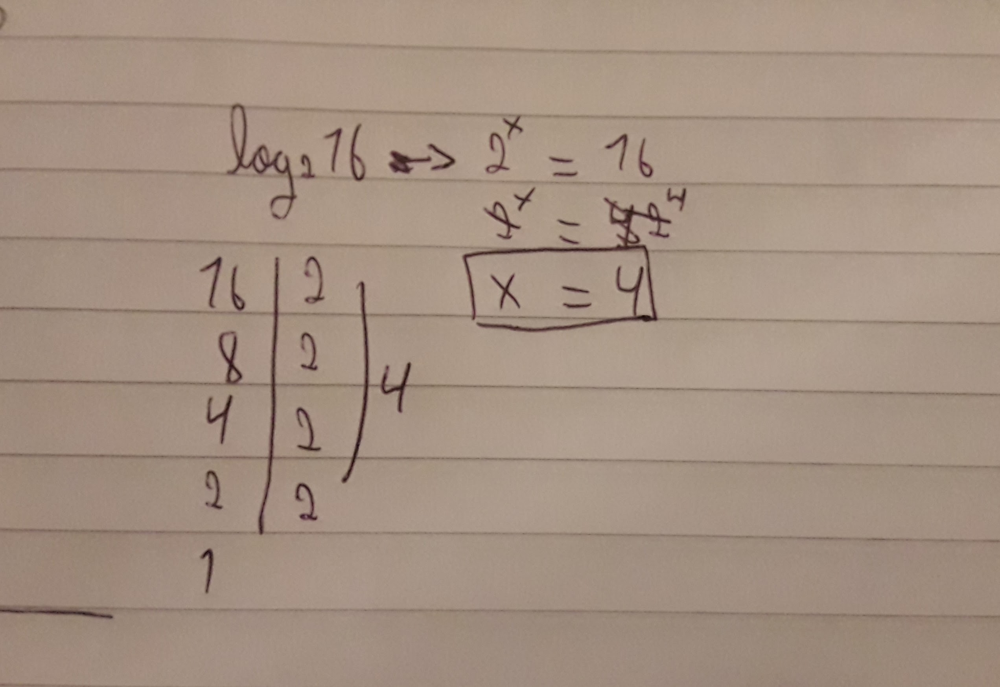

A notação científica é uma forma de escrever números usando a potência de 10. É utilizada para reduzir a escrita de números que apresentam muitos algarismos, (tanto números muito grandes, como números muito pequenos).
Vou dar um exemplo prático: transformar o número 942.000.000 (que é a circunferência da translação da terra) em notação científica.
Para isso temos que usar as potências de base dez. Pegando o primeiro número, que é 9,42, multiplicando por 10, elevado a quantidade de casas depois da vírgula, ou seja:
9,42x10^8
Outro exemplo: 0,000000000178. O primeiro número 1,78, (e como agora temos um número muito pequeno, temos que colocar o expoente negativa para inverter a fração) vezes 10 elevado a -10, temos:
1,78x10^-10
Chamamos de logaritmo de a na base b, representado por logab, o valor x, tal que a elevado a x seja igual a b.
Por exemplo, ao escrever o log²8 (lê-se logaritmo de 8 na base 2), estamos procurando o número a que devemos elevar o 2 para que a resposta seja igual a 8.
Exemplo: log²16
